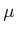
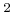
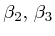
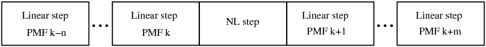

fiber
Optical fiber in the nonlinear regime.
FIBER(X,FLAG)
FIBER(X,FLAG) solves the nonlinear Schrödinger equation
(NLSE) in absence of polarization effects, or
the Coupled-NLSE (CNLSE) with polarization effects.
X is a structure of fields:
- X.length: fiber length [m]
- X.alphadB: fiber attenuation [dB/km]
- X.aeff: fiber effective area [m]
- X.n2: fiber nonlinear index [m/W]
- X.lambda: wavelength [nm] at which X.disp is
evaluated
- X.disp: fiber chromatic dispersion coefficient [ps/nm/km]
@ X.lambda
- X.slope: fiber slope, i.e. derivative of X.disp
[ps/nm/km] @ X.lambda
- X.dzmax: max. step for the split-step algorithm [m]
- X.dphimax: max. nonlinear phase rotation in each step [rad]
The attenuation is assumed independent from the wavelength.
For the solution of the CNLSE, i.e. with two polarizations, there
are also the following additional parameters:
- X.dgd: fiber average differential group delay [symbols]
- X.nplates: number of waveplates or trunks for PMD emulation
- X.manakov: 'yes': Solve the Manakov equation. 'no':
Solve the CNLSE. Default: 'no'.
In the general case with two polarizations the fiber is the concatenation
of randomly oriented polarization maintaining fibers (PMF) fibers.
The user can force the use of a single PMF by adding the following
optional parameters:
- X.db0: birefringence of the PMF fiber at GSTATE.FN=0
- X.theta: azimuth [rad] of the PMF fiber
- X.epsilon: ellipticity [rad] of the PMF fiber
The NLSE is solved by a split-step Fourier algorithm SSFM
with a variable step so as to have a maximum nonlinear phase rotation
into each step equal to X.dphimax. However, the step cannot
be larger than X.dzmax. See Section 3.4.1.2
for more details. The CNLSE uses the same rules except that the step
cannot be larger than min(X.dzmax,X.length/X.nplates). For
waveplates shorter than the nonlinear step, the waveplate length is
rounded in order to apply the nonlinearity on multiples of the waveplates
lengths. On the contrary, the birefringence is applied every nonlinear
step.
Alternatively, the step can be chosen adaptively
basing the choice on a target local truncation error (NLSE only).
In such a case the following parameters should be added to X:
- X.ltol: local truncation error, i.e. max distance between
the field obtained by moving once or twice in a step.
- X.dphiadapt: true/false. True: the local truncation error
method is applied only in the first step and used to correct X.dphimax.
After the first step the SSFM proceeds using the approach based on
X.dphimax. Default: false. See Section 3.4.1.4
for more details.
FLAG is a string of four characters governing the type of
propagation.
The first character is 'g' if GVD (i.e.
)
is on or '-' in absence of GVD. Note that with 'sepfields'
in create_field this function accounts
for the walkoff effect even with the GVD flag set to '-'.
The second character is 'p' for propagation of a polarized
field in presence of birefringence and PMD or '-' in absence
of such effects.
The third is 's' if SPM is on or '-' in absence
of SPM. Likewise, the fourth character is 'x' or '-'
in presence/absence of XPM.
The most complete case is FLAG='gpsx' and corresponds to
propagation in presence of fiber GVD + PMD + SPM + XPM.
The fourth character of FLAG is active only with channels separated
(see option 'sepfields' in create_field).
In this case, the propagation neglects the effect of four-wave mixing,
which can be taken in account only by combining all channels into
a unique field and hence it is a special case of SPM.
OUT=FIBER(X,FLAG) returns in OUT a struct containing
the birefringence parameters used by FIBER:
- OUT.db0 = birefringence [rad] at GSTATE.FN=0
(see reset_all).
- OUT.theta = azimuth [rad] of all the PMFs composing the
fiber.
- OUT.epsilon = ellipticity [rad] of all the PMFs composing
the fiber.
- OUT.dgd = DGD [symbols].
- OUT.lcorr = length [m] of each PMF trunk.
- OUT.betat = beta(omega), i.e. scalar phase shift [rad]
including GVD, slope,etc, where omega/2/pi is the vector of FFT frequencies.
betat is common to both polarizations.
- OUT.db1 = differential phase shift [rad] induced by PMD.
OUT can be used to recover the PMD transfer matrix of the
fiber (see inverse_pmd). The CNLSE is
described as the concatenation of X.nplates PMF trunks, each
with principal states of polarization randomly distributed over the
Poincaré sphere. Each PMF has constant DGD and randomly distributed
birefringence. The nonlinearity is inserted after a certain number
of trunks, depending on X.dzmax and X.dphimax. The
diagram is the following in Fig. 2.4:
Figure 2.4:
Concatenation of linear and nonlinear steps.
|

|
where PMF k, k=1,2,... is a PMF fiber randomly chosen on the Poincaré
sphere.
|
Note 1: The DGD is in [symbols]. The DGD expressed in [ps]
is x.dgd/GSTATE.SYMBOLRATE*1e3.
Note 2: FIBER updates the global variables GSTATE.DELAY
and GSTATE.DISP. At the output of the fiber GSTATE.DISP
is increased of X.disp*X.length*1e-3 [ps/nm] compared
to the fiber input. |
fiber_gui, NLSE, SSFM
A nice reference about the NLSE can be found in [1]. See
also the tutorial about the NLSE in Optilux.
Concerning the choice of the step see Section 3.4.1.
Optilux toolbox reference manual